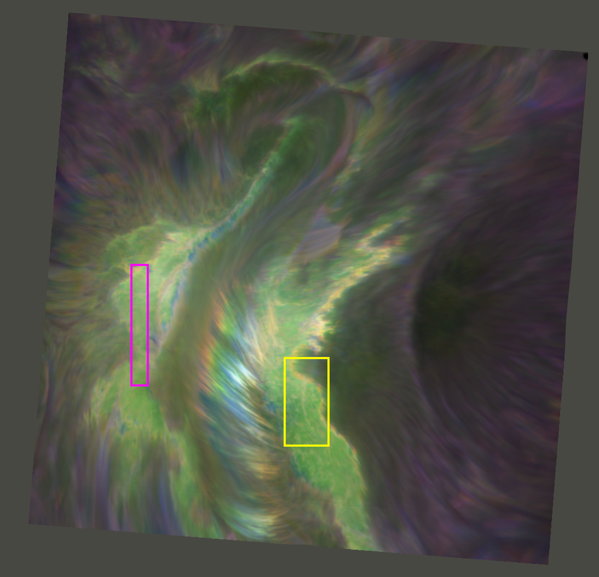

Research papers
2022, COCOPLOT: COlor COllapsed PLOTting software Using colour to view 3D data as a 2D image
- The development of the COCOPLOT software. This method collapses one dimension of 3D data into a representative colour, and plots this over a 2D image. The image can be used to instantly understand the general shape of the data in that dimension, working similarly to the human eye. This method is used primarily to understand the spectral line shapes present in a 3D datacube with spectral information on the collapsed axis and the image in the remaining two dimensions, see image below.
- RAS Techniques and Instruments, Vol. 1, Issue 1, pp. 29-42
- Druett, Malcolm K. ; Pietrow, Alexander G. M. ; Vissers, Gregal J. M. ; Robustini, Carolina ; Calvo, Flavio
- Online videos of figures
- No presentation video available at present

2022, Physical properties of a fan-shaped jet backlit by an X9.3 flare
- Using highly broadened spectral line emission as "pseudo-continuum" backlighting we were able to provide the first observational estimate of the mass in a fan jet, which is a plasma jet situated over a sunspot lightbrige. State-of-the-art inversions of other spectral lines corroborated the validity of our assumptions. This novel approach to a unique observation was praised by the anonymous reviewer as, “a result of substantial importance for solar physics”. I designed this project independently, it was conducted and developed together by Alex Pietrow, a PhD student at the time, with me as supervisor.
- Astronomy & Astrophysics, Volume 659, id.A58, 12 pp.
- Pietrow, A. G. M. ; Druett, M. K. ; de la Cruz Rodriguez, J. ; Calvo, F. ; Kiselman, D.
- No Supplementary materials
- Online presentation by Alex Pietrow

2021, New Eyes and ideas for the chromosphere
- Review article for the Royal Astronomical Society Specialist Discussion Meeting that I hosted with Dr. Ben Snow.
- Astronomy & Geophysics, Volume 62, Issue 2, pp.2.34-2.39
- Druett, Malcolm ; Snow, Ben


{kind=link}